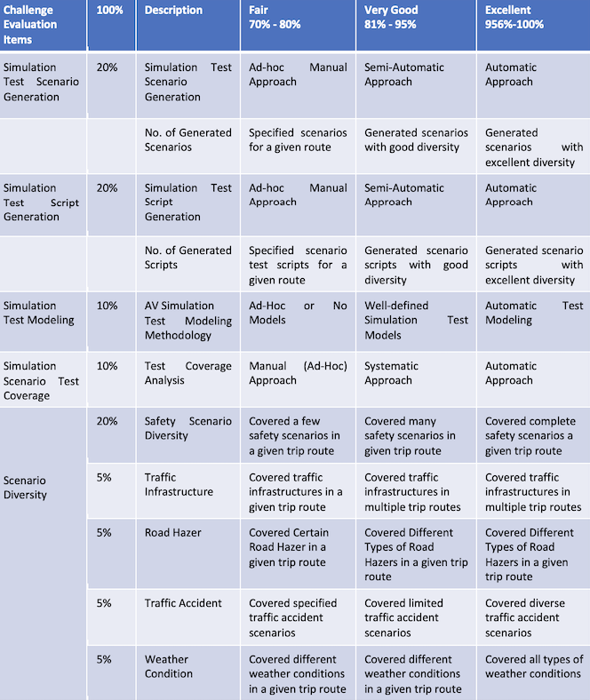
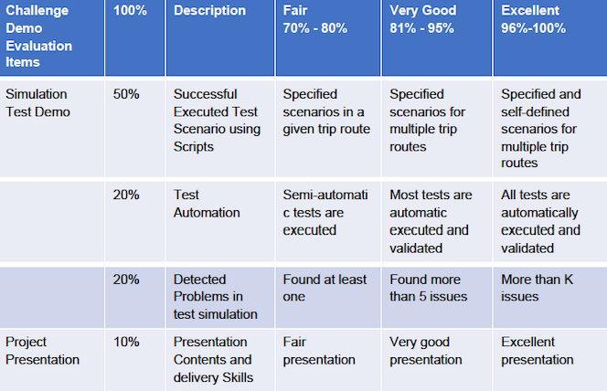

Sponsors


Announcement:
The 2021 IEEE Autonomous Driving AI Test Challenge is now an online only event. It will take place from 23rd August to 26th August.
news
Latest News:
Oct. 26 2020:
Please check the the new Announcement on participating the
online challenges.
For further details about the online challenges, please take a look at the online venue page.
Online Venue
2021 IEEE Autonomous Driving AI Test Challenge
Sponsored by IEEE AI Test Conference 2021
Introduction:
Testing autonomous driving vehicles refers to a quality assurance process in which diverse validation activities are performed based on well-defined quality assurance standards and assessment criteria. In a quality validation process, unmanned autonomous driving vehicles are validated at different levels (component, integration, and system) based on the pre-defined quality requirements to assure system quality in algorithms, functions, components, behaviors, connectivity, sensing, performance, intelligence, and decision makings in diverse contexts and conditions. To reduce the cost and increase the testing efficiency in the autonomous driving industry, simulation testing receives increasing attention and effort in recent years. A high-fidelity simulation software usually contains the mathematical representations of the environment, the dynamics of autonomous vehicles and surrounding vehicles, the sensors models, etc., at different levels, and is needed to facilitate the testing and development of autonomous driving systems. In order to perform efficient simulation testing, techniques for optimizing and accelerating testing processes are in great demand.
This challenge is set up as a platform to address this demand, and advocate the importance and need of quality validation and automation for autonomous driverless cars. This platform provides a global competition opportunity for international student teams and professional teams to develop diverse simulation testing techniques and approaches in test scenario generation and automation.
Simulation environment:
In this challenge, LGSVL simulator will be used to support simulation testing and execution. LGSVL simulator is a Unity-based autonomous vehicle simulator developed by LG Electronics America R&D Center. The LGSVL simulator can generate various realistic 3D environments by adjusting environmental parameters including maps, weather, traffic, and pedestrians. It can also simulate different sensor outputs, including camera, Lidar, radar, ultrasonic, etc., and lots of virtual sensors to generate ground truth data (e.g. depth, semantic/instance segmentation, 2D/3D bounding box, etc.). Users can generate and test arbitrary edge case scenarios and simulate billions of miles. LGSVL simulator is fully integrated with the open-source platforms Baidu Apollo and Autoware. In this challenge, teams will use LGSVL integrated with Baidu Apollo to generate and evaluate test cases.
The details about LGSVL could be found in the following URLs:
https://www.lgsvlsimulator.com/
https://www.lgsvlsimulator.com/docs/
AV Simulation Test Challenge:
The challenge consists of two phases:
1. Training and team selection. During this phase, training materials including tutorial
videos, documents, and online Q&A sessions will be delivered to the teams so that the
teams will get familiar with LGSVL simulator.
Available training materials:
https://www.youtube.com/watch?v=Ucr0aM334_k
https://www.lgsvlsimulator.com/docs/getting-started/
Two Q&A / demo sessions
2. Competition. During this phase, teams use the traffic accident/crash database to create
scenarios, automation scripts, and UI, and submit for evaluation. The report [1] done by
the National Highway Traffic Safety Administration discussed the most accident scenario
due to human operation according to the data they collected in the past years.
[1] https://www.nhtsa.gov/sites/nhtsa.dot.gov/files/pre-crash_scenario_typology-final_pdf
_version_5-2-07.pdf
[2] https://www.nhtsa.gov/research-data/databases-and-softwar
Challenge Tasks for Each Team:
1. Form a team and make your challenge registration via specified challenge platform. Each
team can have up to 5 members.
2. Attend challenge training sessions
3. Create specified test simulation scenarios and develop your executive test scripts
4. First phase deliverable - Work on deliverable #1 and submit your challenge project
artifacts to the specified challenge platform.
5. Second phase deliverable - Work on deliverable #2 and submit your challenge project
artifacts to the specified challenge platform.
6. Final challenge demo and evaluation for selected final teams.
7. Final paper submission and presentation for selected final teams.
Deliverable #1 - Develop specified simulation test scenarios and scripts for a specified route.
For details, please refer to the deliverable #1 specification document.
(AVTest-Challenge-Deliverable1)
Deliverable #2 – Develop AV simulation test scenarios and scripts based on the given
requirements. (see AVTest-Challenge-Deliverable2)
Challenge Evaluations:
The results will be evaluated based on
1) Test simulation automation in test simulation modeling, auto-script generation,
auto-result validation, auto-coverage analysis, and auto-report
2) Models and methodology
3) Simulation demos based on specified routes, scenarios, and rules
4) The number of test simulation scenarios
The submissions will be evaluated based on the following criteria:
AV Test Simulation Generation – Evaluation Criteria
This evaluation criteria listed below provides detailed assessment rubrics for AV test simulation scenario generation and script generation from different teams.
AV Test Simulation Demo – Evaluation Criteria
This evaluation criteria listed below provides detailed assessment rubrics for challenge demos given from different teams.
Challenge Organization Platform
Github
Getting Started with LGSVL:
The instructions on how to get started with LGSVL including the system requirements can be found at
https://www.lgsvlsimulator.com/docs/getting-started/ It is highly recommended to have a local machine
running LGSVL Simulator so that you can easily develop/debug your test cases. If both LGSVL Simulator
and Apollo can be run locally, either on the same machine or on two different machines, it would be ideal.
Otherwise, LGSVL cloud can be used to run scenarios in parallel for verification. LGSVL cloud can run LGSVL
Simulator, Apollo ad stack, and scenario/Python scripts. Users can view the visualization of recorded data
and can see an analysis report of all the simulations after simulations are finished.
Cloud support:
Amazon AWS cloud environment
Share us
Register for challenge
Dates
Important Dates
Registration deadline :
March 15 2021
Training, preparation starts:
February 2021
First phase challenge submission:
April 30 2021
Notification of selected teams :
May 15 2021
Second phase challenge submission:
July 15 2021
Paper submission:
July 15 2021
AI Test Conference presentations
August 23 2021
Announcement of winners:
August 2021
Contacts
Contacts:
Jerry Gao
Jerry.Gao@sjsu.edu
Wencen Wu
wencen.wu@sjsu.edu
Oum-El-Kheir Aktouf
oum-el-kheir.aktouf@lcis.grenoble-inp.fr
About challenge:
Jerry Gao
Jerry.Gao@sjsu.edu
Fan Jing Meng
mengfj@cn.ibm.com
About Program:
Iraklis Varlamis
varlamis@hua.gr
Magdalini Eirinaki
magdalini.eirinaki@sjsu.edu
Paul Townend
paul.townend@edgetic.com
About Demos/Special Tracks:
Katerina Potika
katerina.potika@sjsu.edu
Proceedings Chair:
Guoyan Xu
guoyan.xu@sjsu.edu
About Website:
Everette Li
everetteli12@gmail.com
Zizhen Huang
zizhen.huang@sjsu.edu